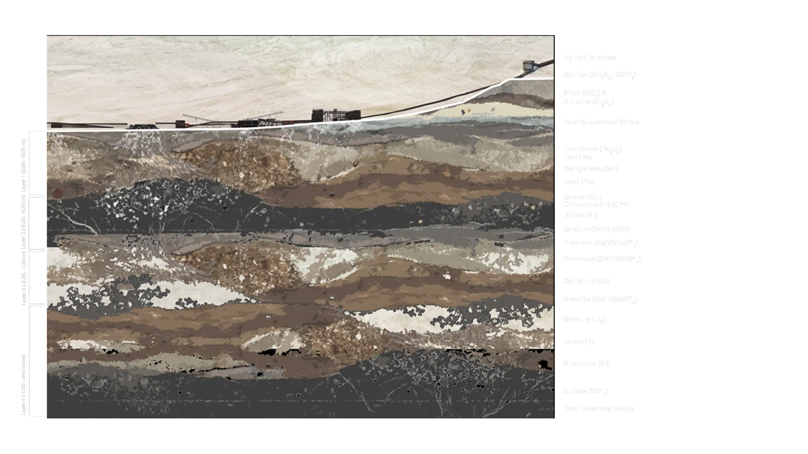

The diagram explains the vertical leaching mechanism and mobilite hierarchy of fly ash, heavy metals, and isotopic components originating from coal fired thermal power plant waste areas within the soil profile. While creating this diagram, instead of geologic age of the soil, the capacity of substances to dissolve in water and adhere to soil were taken as essential. There are 4 main different layers according to depth. The graphic language follows a morphological gradient evolving from rigid and crystalline structures at the surface to dissolved amorphous and liquid phases deeper down.
Agrawal, P., Mittal, A., Prakash, R., Kumar, M., Singh, T. B., & Tripathi, S. K. (2010). Assessment of contamination of soil due to heavy metals around coal fired thermal power plants at Singrauli region of India. Bulletin of Environmental Contamination and Toxicology, 85(2), 219-223.
Mandal, A., & Sengupta, D. (2006). An assessment of soil contamination due to heavy metals around a coal-fired thermal power plant in India. Environmental Geology, 51(3), 409-420.
Murtic, S., Jurkovic, J., Basic, E., & Hekic, E. (2019). Assessment of wild plants for phytoremediation of heavy metals in soils surrounding the thermal power station.
Özkul, C. (2016). Heavy metal contamination in soils around the Tunçbilek thermal power plant (Kütahya, Turkey). Environmental monitoring and assessment, 188(5), 284.
Papp, Z., Dezső, Z., & Daroczy, S. (2002). Significant radioactive contamination of soil around a coal-fired thermal power plant. Journal of Environmental Radioactivity, 59(2), 191-205.
Paul, K. T., Satpathy, S. K., Manna, I., Chakraborty, K. K., & Nando, G. B. (2007). Preparation and characterization of nano structured materials from fly ash: a waste from thermal power stations, by high energy ball milling. Nanoscale Research Letters, 2(8), 397.
Pędziwiatr, A., Potysz, A., Kaczmarczyk, I., Sulej, J., Kwasowski, W., & Uzarowicz, Ł. (2025). Combined approach using soil and fly ash analysis to understand the environmental consequences of coal combustion in thermal power stations in the city. Water, Air, & Soil Pollution, 236(3), 146.
